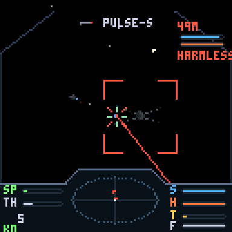
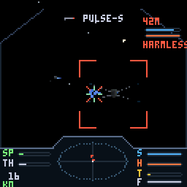
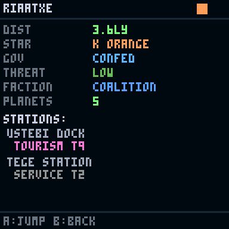
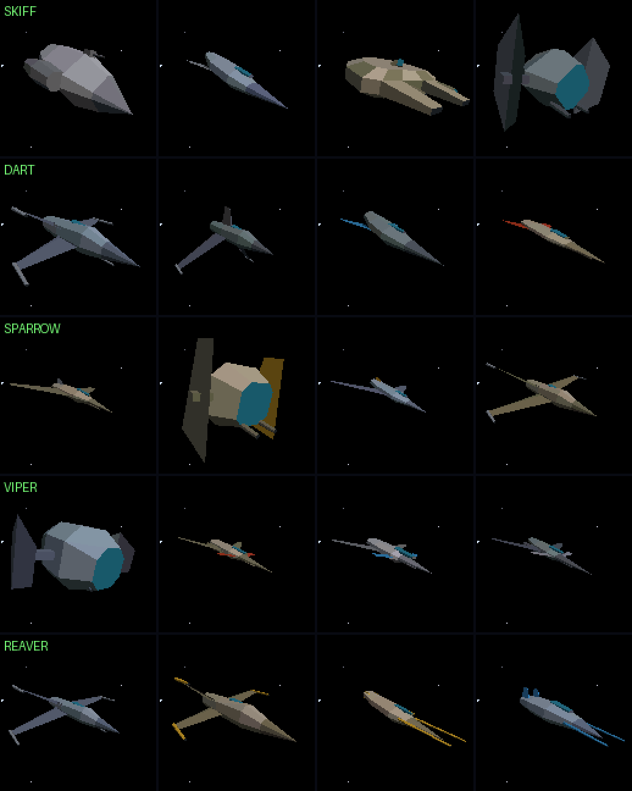
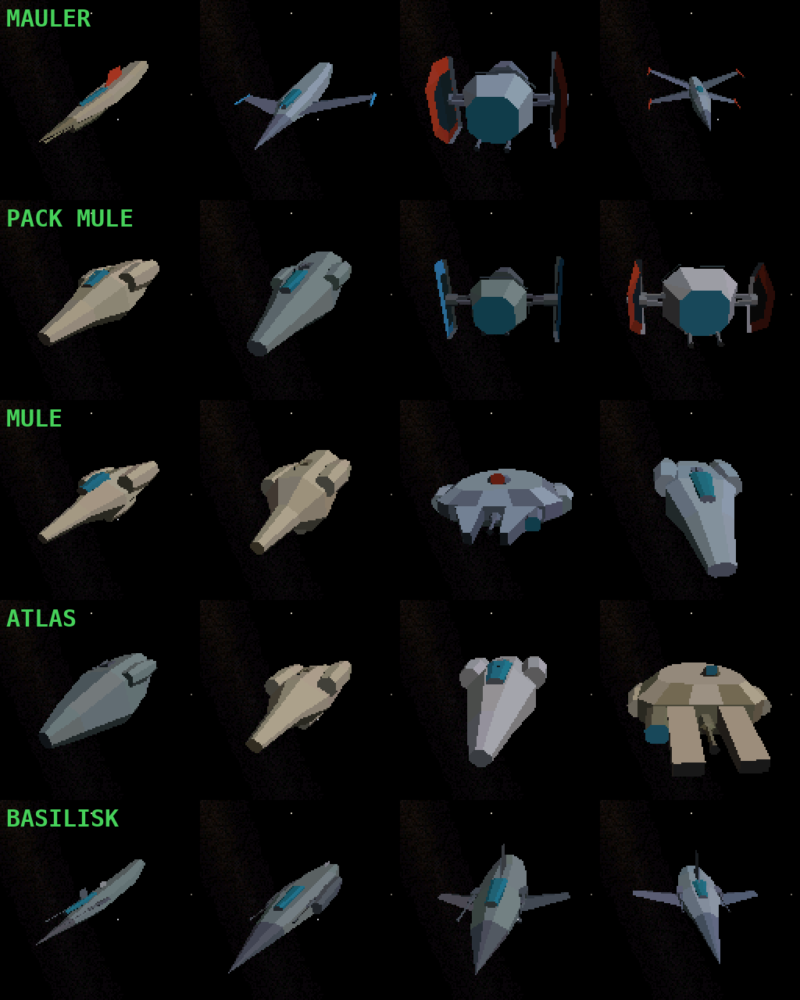
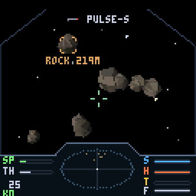
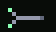
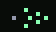
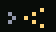
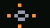

Welcome, Commander

▶ Watch a full gameplay run (69 s) — dogfight, salvage, supercruise, docking, trading, outfitting and a hyperjump.
ThumbyElite drops you into an infinite procedurally generated galaxy with 1,000 credits and a random battered starter ship — every commander begins differently: maybe a SKIFF with a worn pulse laser, maybe a DART with a rattly autocannon. Earn the rest. From there, everything is yours to earn: trade between stations, run missions for the three great factions, hunt bounties, scoop salvage from wrecks, refit and upgrade your way up from a junk SKIFF to a BASILISK dreadnought.
The loop at the heart of the game: fly → fight or trade → dock → bank your progress → fit something better → fly further. Docking saves the game; dying costs you everything since your last dock. Risk is always yours to choose.
Controls
The Thumby Color has a d-pad, two face buttons (A B), two shoulder buttons (LB RB) and MENU. Flight uses chords: hold a shoulder button to change what the d-pad does.
In flight
| Input | Action |
|---|---|
| D-PAD | Pitch & yaw. UP = nose down by default (flight-stick convention) — flip it with INVERT Y in the settings menu |
| A | Fire the active weapon |
| B | Switch to the next mounted weapon |
| LB hold + LEFT/RIGHT | Roll |
| LB tap | Cycle target lock (nearest hostile first, then outward). With no hostiles around, locks the nearest salvage canister; with no salvage either, locks the local station (your way home) |
| LB hold + B | Dump chaff (with a CHAFF pod fitted) — breaks seeker locks |
| A hold/release | RAILGUN only: hold to charge, release to fire |
| RB hold + UP/DOWN | Throttle up / down |
| RB tap | Toggle flight assist (drift mode) |
| RB double-tap | Afterburner boost (2.2 s burn) |
| LB+RB together | Request docking (within 600 m of a station) · engage supercruise to your destination |
| MENU | Pause menu: resume, galaxy chart, system map, ship status, settings (invert-Y, FPS readout) |
In menus
| Input | Action |
|---|---|
| D-PAD | Move cursor (hold to scroll) / pan maps |
| A | Select / confirm / drill into details |
| B | Secondary action (sell, unfit, ship details) or back |
| LB | Open the detail sheet for the highlighted item (outfitting) |
| MENU | Back / close |
The HUD

Left panel
- SP — your actual speed (boost pushes it past the bar's normal range). The number below is metres per second.
- TH — your throttle setting; with assist on, SP chases TH.
- DR appears when flight assist is off (drift); BS while boost burns.
- K# — kill tally.
Right panel — the four bars
- S — Shield. Absorbs damage first; recharges slowly after ~4.5 s without being hit.
- H — Hull. Your real health. Only docking repairs it.
- T — Heat. Every shot adds heat; at the top your weapons cut out until they cool. A klaxon warns near the limit.
- F — Fuel. Hyperspace range in light-years. Jumps spend their distance; refuel at stations.
The scanner
The centre disc is the classic Elite radar: you are the middle dot, contacts appear as blips with a vertical stalk showing height above or below your flight plane. Red = hostile, grey = neutral, gold (blinking) = salvage canisters — fast blink means component pod (weapons or equipment inside), slow blink means commodity cargo.
Combat indicators
- C4 by the dashboard = chaff charges remaining (CHAFF pod fitted).
- Closing brackets on the reticle = railgun charging; bright flash = ready to loose.
- Green pip near your target = TARGETCOMP's lead indicator — aim there, not at the ship.
- ! INCOMING ! + urgent beeps = seeker tracking you. SYSTEMS SCRAMBLED = ion strip, weapons offline.
Target readout
Locking a target (tap LB) shows its name, tier, distance and its own S/H bars top-right, plus a red box around it on screen. Off screen, an arrowhead points the shortest way to turn — follow it and the target slides into view. Bounty-mission targets show ** MARK **.
Flight Model
The ship flies Newtonian-lite: thrust accelerates you along your nose, and your velocity bleeds toward where you point (with flight assist on). Key systems:
- Throttle (RB+UP/DOWN) sets a target speed; assist holds you there.
- Flight assist off (RB tap) — pure drift. Your nose turns but your velocity doesn't: aim sideways while sliding, the classic decoupled dogfight trick. DR shows while drifting.
- Boost (RB double-tap) — 1.8× speed for 2.2 s. Great for escapes and closing distance.
- Precision steering — turning has a ramp: the first touch turns at 1% rate, building to full over half a second. Tap for single-pixel aim corrections, hold to whip the nose around. Released axes keep a short momentum tail (~0.25 s), so alternating UP/RIGHT taps blend into smooth diagonal arcs.
Combat



Combat is real-time 3D dogfighting. The flow: lock (tap LB) → close → put the nose on them (follow the turn arrow) → manage heat while you fire → break and re-approach when your shields drop.
Damage model
- Hits drain shields first (blue flicker), then hull (sparks). Ship shields recharge out of combat; hull damage is permanent until you dock.
- Your own ship rumbles on hits — soft buzz for shield, hard thump for hull. If you feel thumps, break off now.
- Kills pay an instant lawful bounty scaled by the victim's skill tier (see table), plus loot often spills from the wreck.
| Pilot tier | Behaviour | Kill bounty |
|---|---|---|
| HARMLESS | Wide lazy turns, poor aim, light weapons | 25 cr |
| NOVICE | Slow reactions, basic loadout | 80 cr |
| CAPABLE | Decent aim, mixed weapons | 220 cr |
| DEADLY | Tight turns, leads shots, heavy guns | 600 cr |
| ELITE | Near player-grade agility, the best gear | 1,600 cr |
Reading the fight
- Blue shimmer on your target = their shield is soaking it (with a glassy tick sound). Orange sparks = you're cutting hull.
- Lock chirp confirms every fresh target lock.
- ! INCOMING ! flashing + urgent two-beeps = a seeker is tracking you. Chaff it (LB+B), outrun it, or out-turn it.
- SYSTEMS SCRAMBLED = an ion strip got you: weapons dead for 2.5 s, blue arcs on your hull. Run cold until it clears.
Heat
Every weapon adds heat per shot (the T bar). Past the red line a klaxon sounds; at the top, weapons refuse to fire until things cool. Big lasers and photons run hot; autocannons and missiles barely register. The Gunnery skill reduces all weapon heat.
Homing missiles
Lock a target, switch to HOMING (B), fire. The seeker steers at 1.7 rad/s toward the target you had locked at launch — fired nose-on it almost always connects; a hard-jinking ace can outturn one fired from the side. No lock = flies straight as a dumbfire.
Weapons

Nine weapon families. Each mount on your hull has a size (Z1–Z3); a weapon fits any slot of its size or larger. Base stats:
| Weapon | Size | Damage | DPS | Heat/s | Velocity | Range | Ammo | List price |
|---|---|---|---|---|---|---|---|---|
| PULSE-S | Z1 | 9 | 56 | 28 | hitscan | 600 m | energy | 600 |
| PULSE-M | Z2 | 16 | 73 | 34 | hitscan | 700 m | energy | 1,800 |
| PULSE-L | Z3 | 28 | 93 | 40 | hitscan | 800 m | energy | 4,800 |
| BEAM | Z2 | 4/tick | 80 | 64 | hitscan | 500 m | energy | 2,600 |
| PHOTON | Z2 | 34 | 62 | 25 | 260 m/s | 1,100 m | energy | 3,400 |
| GAUSS | Z2 | 40 | 44 | 7 | 1,400 m/s | 1,700 m | 24 rds | 5,200 |
| AUTOCAN | Z1 | 5 | 71 | 17 | 750 m/s | 900 m | 160 rds | 900 |
| MISSILE | Z1 | 45 + 22 m blast | 56 | 2.5 | 220 m/s | 2,000 m | 8 rds | 1,200 |
| HOMING | Z2 | 32 + 18 m blast | 29 | 1.8 | 190 m/s, seeks | 2,600 m | 6 rds | 2,800 |
| FLAK | Z2 | 5 × 6 pellets | 46 | 7.7 | 420 m/s cone | 400 m | 40 rds | 1,600 |
| RAILGUN | Z3 | 90 (charged) | 56 | 10 | 2,200 m/s | 2,200 m | 12 rds | 7,800 |
| ION | Z2 | 30 shield / 4 hull | 67/9 | 18 | 340 m/s | 700 m | energy | 3,000 |
| MINE | Z1 | 45 + 18 m blast | — | 0.8 | dropped astern | 18 m trigger | 6 rds | 1,400 |
| TRACTOR | Z1 | — | — | 6 | pulls salvage | 300 m | energy | 800 |
- FLAK — a cone of pellets, devastating point-blank, useless at range. The brawler's answer to agile fighters.
- RAILGUN — hold A to charge (rising tones, reticle brackets close in), release at full charge to fire. 90 damage per lance; tech-12 yards only, and ELITE aces field it against you.
- ION — melts shields, tickles hull (13%). Fully stripping a shield SCRAMBLES the target: weapons offline 2.5 s with blue arcs crawling on the hull. Strip → disable → execute. CAPABLE+ pirates carry them too — when YOUR shield breaks to ion fire, expect the klaxon and a dead trigger.
- MINE — drops armed astern (blinking red), drifts to a stop, triggers at 18 m, self-destructs at 25 s. The hauler's escape tool: drop them in your wake while running.
- TRACTOR — two tools in one: with a ship locked in 300 m it grapples — their velocity bleeds to a stop and their drives strain while you hold the beam (smaller prey holds harder; big hulls fight it). With salvage locked, it reels canisters in at 26 m/s. Costs a weapon slot and runs hot when held — the REAVER pirate-and-salvage special.
The armoury — every terminal stocks differently
Each station's outfitting bay carries a seeded subset of the catalogue (4–6 lines), gated by tech level: backwaters sell pulse lasers, autocannons, dumbfires and tractors; T4+ adds flak and mines; T6+ beams, heavy pulses and seekers; T8+ ion blasters; T11+ photons and gauss; railguns are T12+ only. Prices swing ±15% with the local economy — MILITARY worlds sell arms cheapest, agricultural ones mark them up. Gadgets and equipment follow the same economy pricing (fuel scoops T7+, targeting computers T9+, chaff T5+).
And the reason to check every terminal you dock at: ★ featured offers — the occasional non-standard instance (REINFORCED, MILITARY, even PROTOTYPE) sold at its full quality price, starred and gold in the list. Any weapon can appear anywhere, so a frontier terminal might be quietly sitting on the best gauss you'll ever own. High-tech stations feature more often.
Quality & integrity
Every weapon (and equipment item) is an instance with a quality grade and a wear state. Effective damage = base × quality × condition:
| Grade | Tag | Output | Price |
|---|---|---|---|
| Salvaged | SLV | ×0.80 | cheap, found in wrecks |
| Standard | STD | ×1.00 | regular shop stock |
| Reinforced | RNF | ×1.12 | uncommon drops · featured shop offers |
| Military | MIL | ×1.22 | rare drops from aces · rare featured offers |
| Prototype | PRO | ×1.35 | the jackpot — wrecks or a lucky terminal |
Condition (0–100%) scales output from ×0.6 to ×1.0 — a 70% PROTOTYPE still beats a fresh STANDARD. Repair at any outfitting bay; the Tech skill cuts repair prices.
Affixes — factory modifications
Some instances carry an affix — shown in the name (GAUSS-VN in lists, VENTED GAUSS on the sheet) and folded into every effective stat and the compare deltas. Roughly a fifth of component drops, half of featured shop guns, and the occasional bargain-bin stock line:
| Affix | Tag | Effect | Found |
|---|---|---|---|
| OVERCLOCKED | OC | +18% dmg, +30% heat | drops |
| VENTED | VN | −35% heat, −8% dmg | drops, featured |
| CALIBRATED | CL | +30% range | drops, featured |
| RAPID | RP | −20% cooldown, −12% dmg | drops |
| SURPLUS | SP | −30% price, no catch | shop bargain bins |
| TUNED | TN | +10% dmg, no downside | PROTOTYPE drops only |
Ammo
Ballistic weapons carry magazines. Rounds persist between fits — no free top-ups. REARM is a station service (next to REFUEL on the services menu, with a live price on the row): restocking charges per round — autocannon 1 cr, gauss 8 cr, missile 35 cr, homing 55 cr. Nothing reloads automatically, so an empty gauss after a hungry patrol is a bill you choose when to pay. Shop weapons come loaded; salvage fits at 40% load.
Equipment — Shields & Armor
Defence works exactly like weapons: your ship has one shield-generator slot and one armor slot, separate from weapon mounts, each holding an instance with size, quality and integrity — plus a utility bay for gadgets (two on ATLAS/BASILISK) and, on the big haulers, a turret hardpoint. Four fit categories, none competing with your guns.
- Size Z1–Z3 multiplies your hull's base protection ×1.0 / ×1.3 / ×1.6 / ×2.0 (frame tier caps what each hull can take).
- Quality and integrity multiply on top, exactly like weapons.
- Flying bare (slot empty) leaves you at a weak ×0.55 baseline — always keep something fitted.
- Shield gens and armor plates drop as salvage (~1 in 4 component pods), can sit in your rack, swap-fit from it, repair, and sell.
Buying with full slots is fine — if nothing compatible is free, the purchase lands in your hold (TO HOLD toast) and you swap it in from the rack whenever you like. Occupied equipment slots no longer force a trade-in of your old unit.
List prices: shields 1,400 cr (Z1) / 2,800 (Z2) / 5,040 (Z3); armor 1,100 / 2,200 / 3,960 — times quality and variant. Trading in your old unit returns ~40% of its value.
Variants — equipment with character
Each station's equipment rack sells a seeded variant per tier, and salvaged gear rolls them randomly. Elite pirates fly them too — a BULWARK wall fights differently from a REGEN skirmisher:
| Shield | Behaviour | Armor | Behaviour |
|---|---|---|---|
| STANDARD | baseline | STANDARD | baseline |
| REGEN | cap ×0.7, recharge ×2.4, 2 s delay | REACTIVE | −50% missile/blast damage |
| BULWARK | cap ×1.5, recharge ×0.4 | ABLATIVE | +35% HP, wears 3× faster |
| PHASE | cap ×0.85, 15% of hits pass through | COMPOSITE | −15% HP, +8% speed & turn |
Wear is real now: every hull hit chips your armor's integrity; every shield collapse chips the generator. Battle-worn protection under-performs until repaired — the Tech skill keeps the bills down.
Utility gadgets
Every hull has a utility bay (ATLAS and BASILISK: two). Gadgets fit there, never competing with guns or protection:
| Gadget | Effect | Price |
|---|---|---|
| HEATSINK | −25% weapon heat | 2,200 |
| SCANNER+ | radar range 400 → 700 m | 1,500 |
| AB TANK | boost burn 2.2 → 4.0 s | 1,800 |
| FUELSCOOP | skim close to a star in supercruise for free fuel — every ship heats near a star; past redline the hull burns (T7+ shops) | 2,600 |
| TARGETCOMP | +40% seeker agility + a lead pip for ballistic guns: put the cross on the pip and the rounds connect (T9+) | 3,400 |
| CHAFF | LB+B dumps chaff: every seeker tracking you goes blind. 4 charges, 20 cr each at REARM (T5+) | 1,200 |
The turret hardpoint
MULE, ATLAS and BASILISK carry an auto-turret bay: fit any Z1 weapon from your rack (outfitting → TURRET row) and it fires itself at your locked target — full sphere coverage, 60% damage, slower cycle, energy-fed. Haulers stop being helpless, and the BASILISK becomes a broadside ship. Watch for turrets on large pirate ships too.
Salvage & Loot
Destroyed ships spill canisters; better pilots drop better gear. Some sites also hold derelict debris fields — loot floating free, most often at beacons and planets in dangerous space.
- Canisters carry a pulsing beacon: gold = commodity cargo, cyan = component pod (weapons / shields / armor). Same colours on the scanner.
- Tap LB with no hostiles around to lock the nearest canister — gold brackets, live distance, edge arrow.
- Scoop by flying within 22 m. Slow down! A scoop run at full throttle is a collision course.
- Canisters drift but never expire — finish the fight first, then sweep the field at leisure. They're gone only when you leave the area.
The rack
Scooped components go to your salvage rack (size varies by ship — a REAVER carries 7, an ATLAS 10, a DART just 2). From outfitting you can fit them to free mounts, swap equipment into its slot, or sell (35–65% of list by condition). Each racked item also occupies a cargo slot.
Travel


Supercruise
In-system distances are measured in megametres (1 Mm = 1,000 km) — normal engines would take days. Supercruise compresses the trip: speed builds from a 2 Mm/s floor toward a 3,000 Mm/s ceiling, then the drive brakes you automatically on approach. The HUD ETA models the full accelerate-cruise-brake envelope. Throttle still works — ease off to fine-tune an approach. B drops you out anywhere mid-flight.
Hyperspace

Jumps between stars cost fuel equal to the distance (tank: 30 ly, refill at stations) and are limited by your hull's jump range — bigger, costlier ships reach further (SKIFF 6.5 ly → BASILISK 12.5 ly). The galaxy literally opens up as you upgrade: sparse sectors and remote high-tech yards need long legs to reach.
The Galaxy


The galaxy is infinite and deterministic: every star, planet, economy and pirate derives from your save's galaxy seed. Fly 10,000 light-years in any direction and there's always more.
Star classes
| Class | Colour | Share | Character |
|---|---|---|---|
| M | red dwarf | 40% | dim, tight habitable zones |
| K | orange | 22% | modest systems |
| G | yellow | 16% | sun-like, good odds of temperate worlds |
| F | yellow-white | 10% | bright, wide zones |
| A | white | 8% | big and brilliant (glow on the chart) |
| B | blue-white | 4% | giants — spectacular up close |
Systems hold 0–7 planets — lava, rock, ice, ocean, gas giants (some ringed) and rare earthlike worlds, placed by orbital temperature. Stations orbit the better real estate.
Government, threat & factions
- Six government types from Anarchy to Corporate. Government drives threat level (0–4): how many pirates spawn and how skilled they are.
- Anarchy and Feudal systems have black markets — the only places that trade illegal goods.
- Three majors carve up the map in large sector blobs: the COALITION, the DOMINION and the FREEHOLDS. Reputation (−100…+100 each) rises with missions in their space and pays out as better mission rewards (+0.4% per point).
Where the danger and the loot are
Hostiles and salvage both spawn when you arrive somewhere — a hyperspace arrival or a supercruise drop at a beacon, planet or station. What you find is driven by the system's threat level (0–4, mostly set by government) and where you parked:
- Stations are patrolled — only ~25% of arrivals draw pirates, and debris fields are rare (the locals picked them clean).
- Beacons and planets are frontier — ~55% pirate odds, and the best chance of derelict debris floating free (up to ~60% in lethal systems, 1–3 canisters at a time).
- Threat sets the muscle: threat-1 democracies spawn a lone HARMLESS-to-NOVICE drifter; threat-4 anarchies field wings of up to four DEADLY/ELITE killers flying variant shields. The survey sheet shows threat before you jump — SAFE systems are for hauling, LETHAL ones are hunting grounds (better pilots also drop better salvage: quality and affix odds rise with tier).
- Bounty marks wait at the nav beacon of their contract system, with escorts at ACE tier.
Trading

Twenty commodities. Each station's economy type (Agricultural, Industrial, High-Tech, Extraction, Refinery, Tourism, Military, Service) biases prices: producers sell cheap, consumers pay dear. Tech level and a per-station jitter move prices further.
| Good | Galactic avg | Good | Galactic avg |
|---|---|---|---|
| WATER | 4 | ALLOYS | 70 |
| FOOD | 8 | MACHINERY | 95 |
| HYDROGEN | 10 | ELECTRONIC | 140 |
| TEXTILES | 12 | LUXURIES | 180 |
| FUELCELLS | 18 | COMPUTERS | 220 |
| MINERALS | 25 | RARE GEMS | 400 |
| LIQUOR | 35 | NARCOTICS | 320 ⚠ |
| METALS | 45 | WEAPONS | 150 ⚠ |
| TOOLS | 55 | SLAVES | 90 ⚠ |
| MEDICINE | 60 | CONTRABAND | 65 ⚠ |
⚠ illegal — tradeable only at black markets (Anarchy/Feudal systems), at juicy margins — and carrying them paints a target on you (see contraband heat): more ambushes, bigger wings, all the way to your buyer.
Stations & Docking


To dock: fly within 600 m of a station and press LB+RB. The docking computer takes over and glides you in. On arrival, the station:
- repairs and rearms nothing automatically — REPAIR (outfitting), REARM and REFUEL are paid services you choose,
- pays out any completed missions,
- saves your game (this is the checkpoint system — see The LawMiningRankDeath & SavesFlying Your Ship).
Services: MARKET (trade), SHIPYARD (hulls), OUTFITTING (the armoury — stock varies per terminal — plus equipment, repairs, salvage), MISSIONS (the board), BAR (rumours and local colour), STATUS, REFUEL and REARM (both with live prices on the menu).
Ships & the Shipyard


Every dockyard stocks its own selection. A station rolls five ships from its seed — class, look and name (like SPARROW-K4) are all unique to that yard. The same class re-rolled elsewhere looks different. Ship hunting is a real reason to explore; high-tech yards stock the big classes.
| Class | Price | Speed | Cargo | Jump | Mounts | Rack | Role |
|---|---|---|---|---|---|---|---|
| SKIFF | 900 | 85 | 12 | 6.5 ly | Z1 | 3 | where everyone starts |
| DART | 3,200 | 150 | 4 | 7.0 | Z2 | 2 | courier — speed is the cargo |
| PACK MULE | 7,000 | 80 | 48 | 7.5 | Z1 | 6 | first real freighter |
| SPARROW | 8,500 | 120 | 16 | 8.0 | Z2 Z1 | 4 | fight + carry workhorse |
| VIPER | 16,000 | 135 | 10 | 8.5 | Z2 Z2 | 3 | pure interceptor |
| MULE | 21,000 | 70 | 96 | 9.0 | Z2 Z1 | 8 | serious trading |
| REAVER | 24,000 | 125 | 24 | 9.5 | Z2 Z2 Z1 | 7 | the salvager-raider |
| MAULER | 42,000 | 110 | 18 | 10.0 | Z3 Z2 Z2 | 5 | gun platform |
| ATLAS | 58,000 | 60 | 200 | 11.0 | Z2 Z2 | 10 | a flying warehouse |
| BASILISK | 130,000 | 95 | 60 | 12.5 | Z3 Z3 Z2 | 8 | the endgame warship |
Trading in your current hull returns 70% of its list price. Mounted weapons migrate with you where they fit; the rest go to the rack (or are sold at salvage rates if there's no room). Equipment over the new frame's tier cap steps down a tier.
Ship designs


Missions, Bounties & Reputation


| Type | What it asks | Pay |
|---|---|---|
| DELIVERY | Haul N units of a good to a named station (cargo is handed to you — you need the hold space) | distance + cargo value based |
| CULL | Destroy N pirates, anywhere | ~320 cr per head |
| BOUNTY | Kill a marked pilot waiting at a named system's nav beacon | 600–6,500 cr by tier |
Bounty hunting, step by step
- Take a contract sized to your ship: EASY MARK (600 cr) up to ACE MARK (6,500 cr — brings an escort, flies a heavy hull).
- Open the galaxy chart: the hunt system pulses as a red diamond. Jump there.
- You arrive at the nav beacon — BOUNTY MARK DETECTED. Lock with LB; the mark shows ** MARK **.
- Kill it, then dock anywhere to collect (and bank the save).
Completed missions pay at the next dock and add reputation with the local faction (+8 bounty, +4 others). Rep boosts all future rewards in that faction's space — a +50 standing pays +20% on everything.
Pilot Skills
Four skills level from what you actually do (thresholds at 2, 5, 10, 18, 30, 50, 80, 120, 170 XP — ten levels):
| Skill | XP from | Each level gives |
|---|---|---|
| GUNNERY | kills, combat missions | −2.5% weapon heat |
| TRADING | profitable trades, deliveries | −1.2% on all purchases |
| TECH | scooping & repairing components | −5% repair costs |
| PILOTING | flying — boosts, docks, jumps | +2% turn rate |
A maxed Tech rating halves your refurbishing costs — the heart of the salvage business. Check your levels any time in SHIP STATUS.
The Law
Lawful systems (Confederacy and up) post police Vipers — pale blue on the scanner, POLICE on the lock — patrolling station space. They ignore clean pilots.
- Carrying contraband near a patrol gets you scanned (POLICE SCAN..., ~2.5 s inside 300 m) — then FLAGGED: SMUGGLER: OFFENDER status, a fine on your head, and every patrol engages on sight.
- Shooting a police ship makes you a FUGITIVE instantly (+800 fine); killing one pays no bounty and adds 1,500.
- PAY FINE at any station's services menu clears your record and the heat. Until then, lawful space hunts you — smuggle through Anarchy and Feudal systems, where there are no police at all (and the black markets live).
- Your status shows in SHIP STATUS: CLEAN / OFFENDER / FUGITIVE.
Mining

Asteroid fields drift near beacons and planets — thick and frequent in EXTRACTION and REFINERY systems (the rocks are dim brown on the scanner). Fit a MINING laser (Z1, 700 cr, every armoury) and chip them: every 20 damage of chipping spills an ore canister — minerals, metals, and an 8% chance of RARE GEMS (400 cr a unit) — and cracking a rock open spills a final bonus. Every weapon damages rocks — shells, slugs and missiles included, and rocks block shots (cover!) — but crude blasting vaporizes most of the ore: standard weapons recover under half per chip. The MINING laser recovers everything, four times faster — rocks are finite, so the tool roughly doubles what a belt is worth.
Finding the rocks: tap LB with no hostiles or salvage about and the lock cycles to the nearest belt rock — or double-tap LB to force the target class (TGT: AUTO → SALVAGE → ROCKS) and mine straight through floating loot, or hunt salvage mid-fight. Single taps keep cycling within the chosen class — combat never steps you through a belt. The filter resets to AUTO at each new site — amber corner ticks with a ROCK 485M readout when it's in frame, an amber edge arrow pointing the way when it isn't. Rocks also show as dim brown blips on the scanner disc once you're close. Scoop the ore like any salvage (it counts toward Tech XP) and sell at market — Industrial and High-Tech stations pay best for raw materials. One warning: ore in space attracts vultures. Work a field long enough — sooner in dangerous systems — and you'll hear PIRATES INBOUND. Mine fast, scoop faster, or bring guns.
Combat Rank
Every kill counts toward the classic ladder (shown in SHIP STATUS, with a fanfare on promotion):
| Kills | Rank | Kills | Rank | Kills | Rank |
|---|---|---|---|---|---|
| 0 | HARMLESS | 25 | AVERAGE | 150 | DANGEROUS |
| 5 | MOSTLY HARMLESS | 50 | ABOVE AVERAGE | 250 | DEADLY |
| 12 | POOR | 90 | COMPETENT | 400 | ELITE |
Death & Saves
- Docking saves — automatically, every time. The save keeps your galaxy seed, ship, gear (with exact quality/wear/ammo), cargo, credits, reputation and mission log.
- Death = insurance recovery. You wake at your last dock with everything as it was then. Kills, loot and credits earned since that dock are gone. Undocked space is always at stake — that's the tension.
- CONTINUE on the title screen restores your universe exactly. NEW GAME rolls a fresh galaxy seed — new stars, names, markets, everything.
Flying Your Ship — techniques and equipment in practice

Fuel scoopingFit a FUELSCOOP (T7+ bays, ~2,600 cr), then in supercruise just point the nose at the sun and close in until it dominates the screen. Inside roughly 4.5× the star's radius the scoop runs by itself — there's no button. You'll see a pulsing SCOOPING 14.2 LY toast counting your fuel up and the F bar refilling at 1.6 LY/s (empty to full in ~19 s). The price is star heat: every ship (scoop or not) heats inside ~6 star radii, faster the deeper you go — past the klaxon your weapons cut out, and at the redline HULL BURNING! means exactly that: 5 hull/s until you pull away or die in the corona. Skim in passes: dive, fill, run. It pays for itself in about seven tanks, but its real value is crossing station-less systems without stranding.
Railgun charge
The railgun doesn't fire on press — select it with B, then hold A to charge. Four rising tones sound and the reticle brackets close inward as it builds; at full charge (0.8 s) they snap bright white — release on that cue for the crack-and-sing report and 90 damage down a thick helix wake. Releasing early simply cancels: nothing fires, no ammo is spent.

ChaffWith a CHAFF pod fitted (T5+), the moment ! INCOMING ! flashes and the two-beep alarm sounds, hold LB and tap B. A white burst blooms behind your ship with a sharp hiss, the toast confirms CHAFF! 2 LOCKS BROKEN, and the C# counter on the dash ticks down. Blinded missiles don't vanish — they fly straight along their last heading, so step off that line. Four charges; REARM refills them at 20 cr each.

Tractor beam — two toolsGrappling a ship: lock a hostile (LB), close inside 300 m, select TRACTOR, hold A. A gold beam connects and shimmer dances on their hull — their speed bleeds away to a stop in ~1 s and their drives drag while you hold. Prey bigger than ~1.3× your hull barely feels it. The play: grapple, B to your gun, execute before they recover.
Reeling salvage: with no hostiles, LB locks the nearest canister (gold brackets) — hold A and watch the distance readout tick down as it's dragged to you at 26 m/s. Scoop fires automatically at 22 m.
Drift mode (flight assist off)
Tap RB and the DR light appears: your nose now turns without changing your velocity. The classic use is the strafe-by — build speed toward a target, tap RB, and turn freely: you keep sliding on the old vector while your guns track sideways across the pass. Tap RB again to re-couple and the ship leans back onto the nose. You can read the state off the bars: in drift, SP stops chasing TH.
The auto-turret (MULE / ATLAS / BASILISK)
Arming it is the non-obvious part: the turret feeds from your rack, so first get any Z1 weapon onto it (buy one, or unfit one with B), then select the TURRET row in outfitting and press A — "TURRET ARMED". From then on locking is the trigger: whenever your locked target is in range the turret fires by itself, and you'll hear its quieter report and see tracers leaving your ship at angles your nose isn't pointing. Full-sphere coverage, 60% damage, energy-fed — it never spends ammo. No lock, no turret.
The ion play
Fit ION alongside a kinetic gun and open every fight with the ion: as long as you see blue shimmer on the target, their shield is still soaking it. The moment the shield strips they're SCRAMBLED — blue arcs crawl on their hull and they can't shoot for 2.5 s. That's your window: B to the kinetic and unload into bare hull, orange sparks confirming every round counts.
Defensively: when YOUR shield breaks to ion fire you'll hear the klaxon and see SYSTEMS SCRAMBLED — your trigger is dead. Don't line up a shot; evade until it clears.

Mine layingSelect MINE and tap A: it drops astern with a soft clunk, drifts to a stop, and arms — you'll see its red light blinking behind you. Anything that comes within 18 m takes a 45-damage blast (it knows its owner; you can't trip your own). Best used while running: drop two or three in your wake through a pursuer's line and listen for the detonations. Unspent mines self-destruct after 25 s.
Wear, repair & the refurbish business
Combat wears your gear: every hull hit chips armor integrity, every shield collapse chips the generator, firing doesn't wear guns but salvaged ones arrive pre-worn. Integrity scales output (×0.6 at zero) — check the % on every status row. Repair in outfitting (A on the row; cost scales with damage and the item's value; Tech skill −5%/level).
The business: a MILITARY gauss scooped at 45% sells for a fraction of its value — repair it first and the sale price rises with integrity. Repair-then-sell beats sell-as-is whenever your Tech level keeps the repair under the value gained. That margin IS the salvage profession.
The lock chain
LB locks, in priority order: nearest hostile (red box, lock chirp) → no hostiles? nearest salvage (gold brackets + distance) → no salvage? the local station (cyan diamond, STN distance) — your compass home when you've drifted off the dock. Tap again to cycle outward through hostiles.
Boost
Double-tap RB: the BS light comes on, the engine note swells, and you get 1.8× speed for 2.2 s (4 s with an AB TANK fitted) — watch the SP needle push past the bar's normal range. One burn at a time; it must expire before the next.
Docking
Fly to a station (lock it via the chain above if you've lost it), kill your speed inside 600 m, and press LB+RB together. The docking computer takes the stick — hands off — and glides you in over a couple of seconds. On the pad, two things happen automatically: completed missions pay out, and the game saves. Everything else is a choice you pay for — REPAIR, REARM and REFUEL are priced line items in the services menu.
Quick-start: your first hour
- Take your starter ship to the local station (it's on the scanner; LB+RB in close to engage supercruise toward it, the same chord under 600 m requests docking).
- Check the MARKET — buy whatever's cheap that a neighbour wants. Grab a DELIVERY or EASY MARK from the board.
- Work the loop: deliveries + kill bounties + scooped loot. Sell salvage you can't use.
- First big purchase: a SPARROW (8,500) — fights and hauls. Or a PACK MULE if the trading bug bit you.
- Fit a shield upgrade before you fit a bigger gun. Staying alive earns more than alpha damage.
- Watch the chart for High-Tech systems — their yards stock the serious hardware.